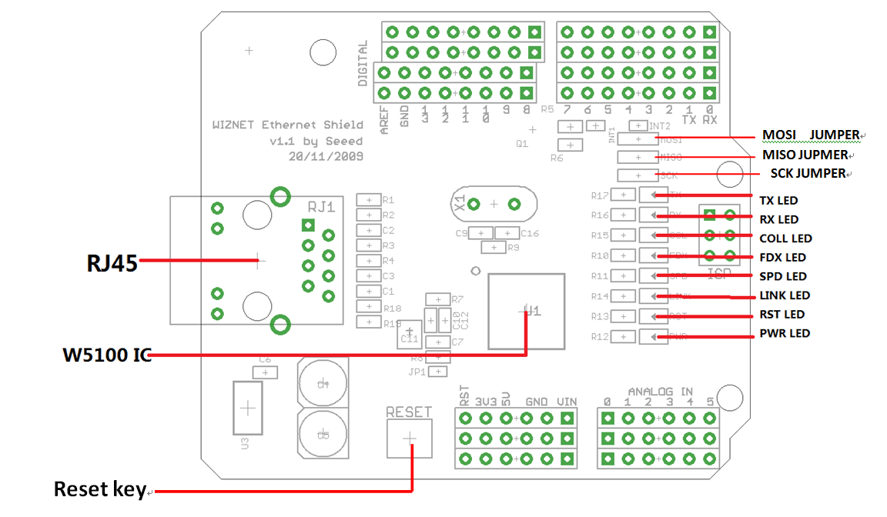
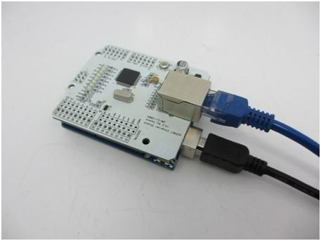
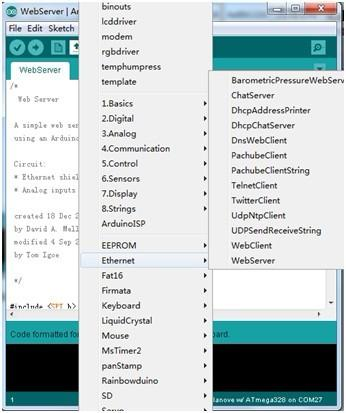
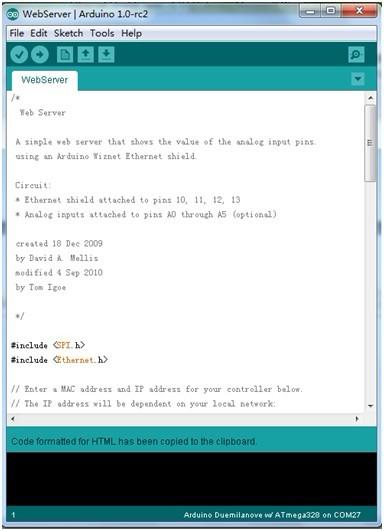
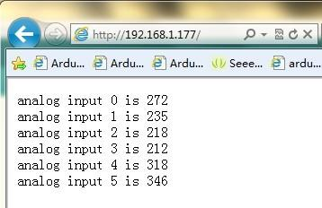

Ethernet Shield instantly enables internet connectivity for Arduino projects. An on-board Wiz5100 ethernet controller handles up to four TCP and UDP connections, just stack it onto an Arduino to create your own networked devices. Easily check connection status with on board indicator lights. Extend your design further with two extra rows of pin header that connect to shields and prototyping boards.
Model: ARD124B2P
http://www.seeedstudio.com/depot/images/product/wiznetshield500.jpg
| Item | Min | Typical | Max | Unit |
|---|---|---|---|---|
| Voltage | 3.5 | 5 | 5.5 | V |
| Current | 120 | 210 | 350 | mA |
| Demension | 72.6x58.4x23.2 | mm | ||
| Supported Connection | TCP/UDP | / | ||
| Net Weight | 24.2 | g | ||

RJ45 - Ethernet Port
Power LED - Power
RST LED(red) - Red when Reset
LINK LED - Always ON when link is ok and flashes while in a TX or RX stat
SPD LED - Light indicates the link speed is 100Mbps
FDX LED - Light indicates the status of full-duplex mode.
Coll LED - Light indicates the presence of collision activity
Rx LED - Light indicates the presence of receiving activity
Tx LED - Light indicates the presence of transmitting activity
Reset KEY - Reset Ethernet shield and Arduino when pressed
D0 - Unused
D1 - Unused
D2 - Connects the INT pin of the W5100
D3 - Contral the reset of the W5100
D4 - Unused
D5 - Unused
D6 - Unused
D7 - Unused
D8 - Unused
D9 - Unused
D10 - Used for SPI Chip Select
D11 - Used for SPI MOSI
D12 - Used for SPI MISO
D13 - Used for SPI SCK
D14(A0) - Unused
D15(A1) - Unused
D16(A2) - Unused
D17(A3) - Unused
D18(A4) - Unused
D19(A5) - Unused
Connect the ethernet shield with internet via RJ45 connector, and Arduino with PC via USB cable. Insert ethernet shield onto Arduion board:

 

| Revision | Descriptions | Release |
|---|---|---|
| v1.0 | V1.0 Release | 2012/3/29 |
{kind=link}